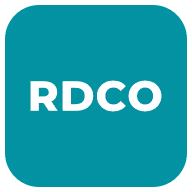
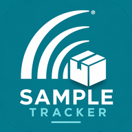

carpetonenerd
Staff tools for Red Deer Carpet One
-

RDCO Safety FLHAs, site inspections and sign-offs safety.carpetonerd.ca -
 Project Tracker
Commercial jobs, quotes and installers
carpetonerd.ca/tracker
Project Tracker
Commercial jobs, quotes and installers
carpetonerd.ca/tracker
- Operations Dashboard The office wall screen for commercial jobs carpetonerd.ca/dashboard
-

Sample Tracker Commercial flooring samples carpetonerd.ca/samples - Insurance Tracker Insurance claims, from quote to close carpetonerd.ca/insurance
-
 Insurance Board
The wall screen for insurance claims
carpetonerd.ca/insurance
Insurance Board
The wall screen for insurance claims
carpetonerd.ca/insurance/dashboard